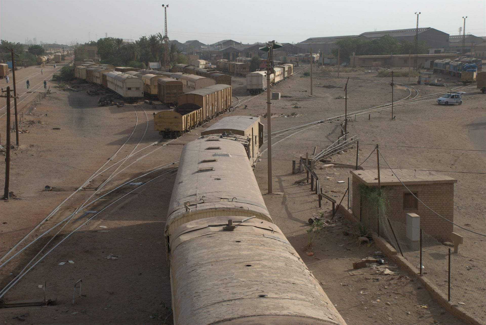

مسودة لمراجعة صاحب الموقع — غير معتمدة للنشر
Initial manuscript; research and image checks remain. مسودة أولى؛ البحث وفحص الصور لم يكتملَا.

تصبح المضخة المحسّنة مفيدة حين يمكن تصنيعها بجودة ثابتة وإصلاحها وبيعها لمن يحتاجها. وبين النموذج الذكي وهذا الإنجاز العادي توجد اختبارات وتمويل ومكونات ومعايير وعملاء وخبرة عملية. يستطيع وزير إعلان دعم الابتكار من دون تسهيل أي خطوة من هذه الخطوات.
لا يعني ذلك أن المؤسسات العامة غير مهمة، بل إن تصميمها مهم. ينبغي أن يسأل السودان: أي مؤسسة ستحل أي مشكلة، وبأي صلاحية، وكيف سيُفحص أداؤها؟ الوزارة الجديدة خيار إداري ممكن، وليست بديلاً عن الإجابة.
يرى طرح البنك الدولي في «مفارقة الابتكار» أن البلدان النامية كثيراً ما تفتقر إلى قدرات مكملة للاستفادة من التقنية، منها الإدارة والتنظيم. ويمتد النقاش من الإنفاق البحثي إلى قدرة المنشآت على تبني المعرفة واستخدامها. هذا إطار مقارن، لا وصفة جرى اختبارها في السودان.[1]
والتحدي الذي يطرحه واضح: يمكن استيراد آلة متقدمة من دون اكتساب القدرة على تشغيلها جيداً، وتمويل بحث من دون وصل نتيجته بمنتج قابل للاستمرار. وفي المقابل، قد يكون تحسين الصيانة أو تنظيم الإنتاج ذا قيمة كبيرة من دون براءة اختراع لافتة.
لذلك تنتمي الورشة والمعمل والعميل إلى نقاش واحد. قد يعرف عامل الإصلاح لماذا تتعطل المعدات محلياً، ويستطيع الباحث اختبار تحسين مقترح، ويحتاج المنتج إلى معرفة إن كان العميل يقدره بما يكفي لدفع تكلفته. لا ينبغي اختزال أي منهم في ضيف احتفالي بمؤتمر ابتكار.
وصفت اليونسكو في أكتوبر ٢٠٢٦ تقييماً لمنظومة العلوم والابتكار السودانية وإطاراً مقترحاً للتعافي، مع التركيز على البنية العلمية والباحثين والقدرات المؤسسية وصلات العلماء. إنه مقترح مؤسسي؛ لا يثبت إعلانه تأمين التمويل المتصور أو تحقق النتائج.[2]
المغزى العملي أن الخبرة تستحق الاهتمام مثل المباني. فإعادة فتح معمل بلا فنيين أو مواد تشغيل أو معايرة أو موازنة صيانة قد تنتج قاعة مهيبة قليلة الفائدة. وقد يظل اتصال باحث نازح بزملائه مهماً قبل إمكان عودته الجسدية.
يناقش مقالنا عن الجامعات مؤسسات تخدم المجتمع. أما هنا فالسؤال أدق: كيف يحصل شخص خارج الجامعة على اختبار أو مشورة تقنية أو شراكة لتحسين منتج؟[3] ينبغي أن تشمل الإجابة المنشآت الصغيرة والورش الإقليمية، لا أصحاب العلاقات الراسخة في العاصمة وحدهم.
تقترح كنداكة اختبار البدائل الإدارية بثلاث وظائف: إتاحة الاختبارات والمشورة والمعدات المشتركة وفهم المعايير؛ وتمويل شفاف لعمل تطوير محدد؛ وفرص لإثبات أداء المنتج عبر تجارب ومشتريات منضبطة.
قد تنسق وزارة جديدة هذه الوظائف إذا امتلكت تفويضاً واضحاً وموظفين قادرين وعلاقات فعالة بالمؤسسات القائمة. وقد تنجز هيئة بعضها بتكرار إداري أقل. وربما تستطيع الجهات الموجودة أداءها بعد إصلاح المسؤوليات والموازنات. يحتاج الاختيار إلى خريطة للصلاحيات والعوائق الحالية، لا إلى افتراض أن الاسم الجديد يصنع قدرة جديدة.
الاختبار هو ما يتغير لطالب الخدمة. هل يعرف المنتج الصغير أين يفحص عينته، وكم يدفع، ومتى تأتي النتيجة؟ وهل يفهم المتقدم غير الناجح سبب رفضه؟ وهل يستطيع المورد عرض منتجه من دون راعٍ سياسي؟
يمكن للدعم العام أن يمنح نشاطاً واعداً وقتاً للتطور، ويمكن أن يبقي مشروعاً فاشلاً لأن إدارته لا تستطيع الاعتراف بالإخفاق. ويتوقف الفرق جزئياً على الشروط الموضوعة قبل بدء التمويل.
ينبغي أن تسمي التجربة الأولية السؤال العملي الذي تختبره. تُقيّم منحة لتحسين وعاء تخزين بحسب الأداء والمتانة والكلفة المطلوبة، لا بمجرد عرض نموذج. ويرتبط الدعم التالي بالدليل. وقد يكون إغلاق تجربة غير ناجحة نتيجة مفيدة إذا سُجلت الدروس بصدق وأتيحت للآخرين.
يجب أن تكون المنافسة حقيقية، لكن اشتراط المتطلبات نفسها على الجميع قد يضر بالمتقدم الأصغر. تستطيع المتطلبات المتناسبة والمعايير المنشورة والمساعدة الفنية توسيع المشاركة من دون إسقاط التدقيق. ويلزم فهم ترتيبات الملكية الفكرية قبل التعاون، بما يشمل مساهمات الباحثين والعاملين والممول العام ومصالحهم.
تعرض إحصاءات البراءات جانباً واحداً من الابتكار. ويتضمن ملف الويبو بيانات غائبة؛ لا يصح تفسير الخانة الفارغة بوصفها برهاناً على غياب الابتكار السوداني.[4] ولا تثبت زيادة عدد البراءات وحدها إتاحة منتجات نافعة محلياً.
الأسئلة الأفضل تتعلق بخدمات موثوقة قُدمت، ومشكلات تقنية حُلت، ومنتجات استوفت المعايير، ومنشآت أصبحت قادرة على صيانة معداتها، ومعرفة انتشرت خارج المستفيد الأول. لن تظهر النتائج كلها بسرعة، ولذلك نحتاج مقاييس مرحلية صادقة بدلاً من عدّ الإعلانات.
قد يقرر السودان في النهاية أن الوزارة هي الأداة المناسبة. لكن ينبغي أن يصل إلى القرار انطلاقاً من العمل المطلوب. يستحق المكتب الجديد مكانه حين يسهل خطوة عملية صعبة على أصحاب الأفكار النافعة. يحتاج البلد إلى هذه الخدمة، سواء حملت اللافتة اسم الابتكار أم اسماً آخر.
المراجع
[1] البنك الدولي، عرض «مفارقة الابتكار»، ٢٠١٧: https://www.worldbank.org/en/events/2017/10/03/technological-innovation
[2] اليونسكو، إطار تعافي البحث العلمي، أكتوبر ٢٠٢٦: https://www.unesco.org/en/articles/unesco-calls-urgent-investment-restore-scientific-research-and-protect-sudans-knowledge
[3] كنداكة، الجامعات السودانية: https://kandaka.com/ar/development/sudan-universities-serving-society/
[4] الويبو، الملف الإحصائي للسودان: https://www.wipo.int/edocs/statistics-country-profile/en/sd.pdf
فحص تحريري لم يُستكمل: التحقق من الصلاحيات المؤسسية الحالية وإضافة مشروع تطبيقي موثق. روجع عرض الكتاب لا الكتاب كاملاً. المسودة ليست تدقيقاً مؤسسياً مكتملاً أو دراسة جدوى.